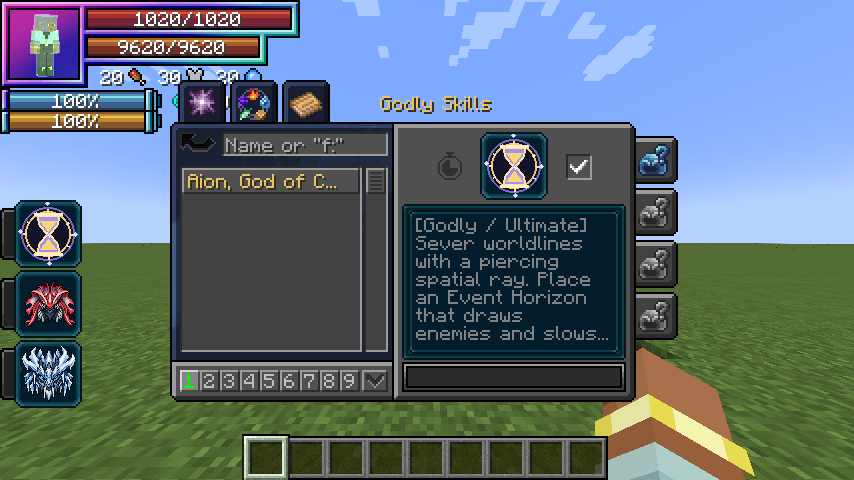

Discontinued archive: Tensura Myths ended at 0.36.1. No further updates are planned.
Godly is Myths’ tier above Ultimate. Open Skills → Godly → Ascension after mastering a combination Ultimate, becoming a True Hero or True Demon Lord, and reaching 12M total EP.
| Skill | Additional ingredient | Role |
|---|---|---|
| Aion | None | Space, rewind and black holes |
| Thoth | Mastered Rune Smith | Elemental magic and aura conversion |
| Lugh | Mastered Threadweaver | Skill Bank and reconstructed attacks |
Demiurge is Eschaton’s boss-exclusive Godly skill and cannot be acquired by players.
Classification passives
Owning any Godly skill grants these automatically, without upkeep, toggle, slot or mastery requirement. Multiple Godly skills do not stack them.
Divine Authority
Damage type: modifier; keeps the attack’s type. Deal 35% more damage to targets without a learned Godly skill.
Absolute Penetration
Damage type: modifier; keeps the attack’s type. Your damage bypasses resistance/nullification skills and their resistance attributes. This does not remove every other defense and does not help another attacker’s damage.
Interference Immunity
Damage type: None. Non-Godly magic interference cannot suppress you.
Pictures
